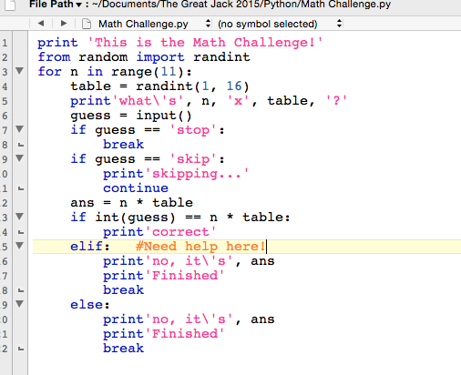

Python Language
Python is an interpreted high-level programming language for general-purpose programming. Created by Guido van Rossum and first released in 1991, Python has a design philosophy that emphasizes code readability, notably using significant whitespace. It provides constructs that enable clear programming on both small and large scales.
Python features a dynamic type system and automatic memory management. It supports multiple programming paradigms, including object-oriented, imperative, functional and procedural, and has a large and comprehensive standard library.
Python interpreters are available for many operating systems. CPython, the reference implementation of Python, is open source software and has a community-based development model, as do nearly all of its variant implementations. CPython is managed by the non-profit Python Software Foundation.
Some Screenshots
Simple functions are:
- raw_input
- for
- while
- else